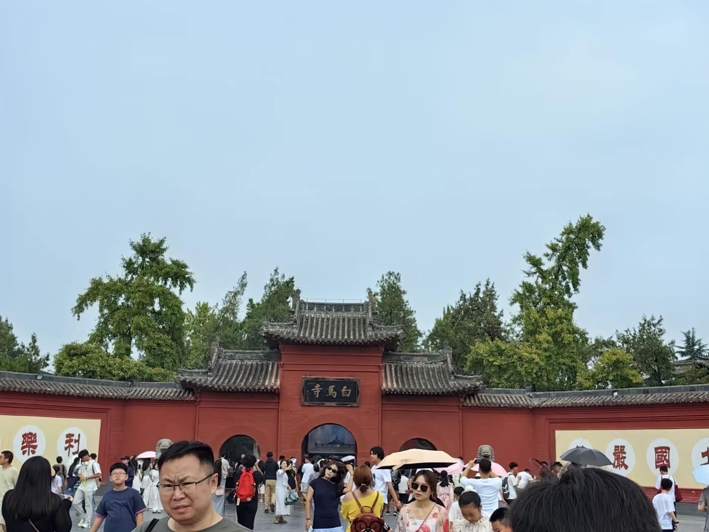

洛阳简介

十三朝古都，华夏文明的摇篮
洛阳位于河南省西部，是中国四大古都之一，拥有5000多年文明史、4000多年城市史、1500多年建都史。作为丝绸之路的东方起点、隋唐大运河的中心，洛阳留存了大量历史遗迹，其中白马寺、龙门石窟、应天门更是必游的文化地标。
本网站聚焦洛阳三大核心景点，带你领略古都的历史底蕴与人文魅力。
三大必游景点

白马寺
中国第一古刹，始建于东汉永平十一年（公元68年），是佛教传入中国后兴建的第一座官办寺院，有"中国佛教祖庭"之称。寺内保存了大量元代夹纻干漆造像，堪称国宝。
特色：国际佛殿区融合多国建筑风格，感受佛教文化传播之路。
了解更多 →龙门石窟
世界文化遗产，开凿于北魏孝文帝年间，历经10多个朝代陆续营造达400余年，现存洞窟像龛2345个，造像10万余尊，是中国石窟艺术的巅峰之作。
特色：卢舍那大佛（高17.14米）为武则天根据自身形象捐资雕造，气势恢宏。
了解更多 →应天门
隋唐洛阳城宫城的正南门，始建于隋大业元年（公元605年），是当时朝廷举行重大庆典和外交活动的场所。现存建筑为2019年复建，还原了"双向三出阙"的恢弘形制。
特色：夜间灯光秀再现盛唐繁华，登楼可俯瞰洛阳城景。
了解更多 →